Description
The Critique Gaming team is an eclectic squad of people with very different social and educational backgrounds, from law and economy to art and programming, with very diverse skillsets. We’ve gathered with the mission of making pointful games that explore important contemporary questions.
History
Dexter
Andrei “Dexter” Olaru is the captain of Critique Gaming. An economist and career debater with international results, he’s the entrepreneurial spirit of the team, handling project and team management, wrangling needed resources.
Marius
Marius Petcu studies in the Bucharest Polytechnic. With artistic spirit and a background in debating, he’s the team’s programmer. He makes sure the abstract thoughts and ideas of the team take tangible form, supple and interactive on the player’s screen.
Moise
Moise Theodor, master of numbers and papers, a human sized calculator of optimized business organization, he is the team’s business admin and our very own semi-pro e-sports player.
David
David Moscovici has a master’s degree in law, is grumpy, is a trainer and career debater and is the team’s game designer. He writes the narrative content, insures the balance and dynamics of game mechanics and handles the creative direction of the games.
Dexi
Dragos “Dexi” Antoniu is an economist but his soul is in music. Passionate about contemporary popular art, he creates the sounds and soundtracks for Critique Gaming.
Cătălin
Amateur musician and video game enthusiast, Cătălin Nedeluș does not like waking up early. However, he is like fish in the water when it comes to game development.
Mădălina
Completing our art team, Mădălina Șoimu is a Computer Science student. She has a knack for smart video games and for drawing art for them.
Projects
Videos
Teaser trailer — YouTube
Release trailer — YouTube
Short Company Presentation (Romanian) — YouTube
How are video games made in Romania - Ep.2 (Romanian, with captions) — YouTube
Interview from System Shutdown — YouTube
Images
{kind=link}
{kind=link}
{kind=link}
{kind=link}
{kind=link}
Logo & Icon
{kind=link}
Awards & Recognition
- "Best Narrative Design" Montreal Independent Game Awards 2019, November, 2019
- "Coup de Coeur Panache Digital Games Finalist" Montreal Independent Game Awards 2019, November, 2019
- "Nordic Game Discovery Contest: Final Four Finalist" Nordic Game, May, 2019
- "Best Game Design" Dev.Play, October, 2018
- "Best Game of the Show" Dev.Play, October, 2018
- "Best Visuals finalist" Dev.Play, October, 2018
- "Indie Prize finalist" Casual Connect London, May, 2018
- "Very Big Indie Pitch nominee" Pocket Gamer Connect London, January, 2017
- "Special Talent Award Contest nominee" Ludicious Zurich, January, 2017
- "Indie Pitch runner-up" Dev.Play, 20 September, 2016
- "Selected for the Amber Jam" East European Comic-Con, 29 May, 2016
Selected Articles
-
Interrogation: You Will Be Deceived brings a fresh game with provocative ideas delivered in a thrilling way
, Gaming Cypher -
Interrogation: You will be deceived ambitiously marries adventure, RPG and strategy elements with a dark edge that will even have you asking questions of yourself.
, Adventure Gamers -
Interrogation is an emotionally compelling and thought-provoking look at contemporary issues.
, PC Invasion -
This is a detective-noir game done right.
, Game Luster -
This is a detective-noir game done right.
, Game Luster -
Do you Expect Me to Talk?
Many a True Nerd,
Additional Links
- Additional team photos
- Photos of us at events or just generally together. facebook.com.
- Company LinkedIn
- Our company's LinkedIn page. linkedin.com.
Team & Repeating Collaborator
- Andrei “Dexter” Olaru
- Producer, Marketing
- Marius Petcu
- Game Developer
- David Moscovici
- Game Design, Writing
- Dragoș “Dexi” Antoniu
- Music, Sound Design
- Cătălin Nedeluș
- Programming, Sound Design, Animation
- Moise Theodor
- Art, Business Admin
- Mădălina Șoimu
- Art, Graphics
Contact
- Inquiries
- office@critique-gaming.com
- facebook.com/CritiqueGaming
- instagram.com/critiquegaming
- twitter.com/Critique_Gaming
- Website
- critique-gaming.com